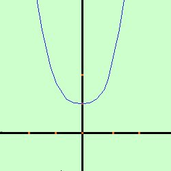
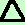
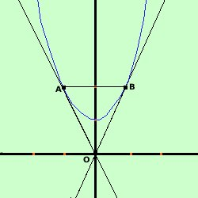

|
Data la parabola y= x2 + 1 trovare le equazioni delle tangenti condotte alla parabola dall'origine O(0,0) e, indicati con A e B i punti in cui tali tangenti toccano la parabola, trovare l'area del triangolo OAB Soluzione:  prima disegniamo la parabola considero poi il fascio di rette passante per l'origine O(0,0) y- 0 = m(x-0) y = mx Faccio il sistema fra il fascio di rette e la parabola y = mx y= x2 + 1 Sostituisco il valore della y dalla prima equazione nella seconda ed ottengo l'equazione risolvente mx = x2 + 1 x2 - mx + 1 = 0 questa e' l'equazione risolvente il sistema: per avere due soluzioni coincidenti devo porre il delta dell'equazione uguale a zero  = b2-4ac = 0 Ho a = 1 b = -m c = 1 = b2-4ac = m2 - 4 (1)(1) =0 m2 - 4 = 0 m2 = 4 risolvo ed ottengo m1 = -2 m2 = +2 Ho quindi le due tangenti
ho i dati O = (0,0) A = (-1,2) B= (1,2)  Come metodo normale dovrei trovare prima la distanza fra due punti e considerarla base del triangolo, considerare poi la retta su cui ho preso tale distanza (retta per due punti) quindi dal terzo punto considerare la distanza punto-retta che sarebbe l'altezza del triangolo e quindi applicare la formula base per altezza diviso due ma in questo caso, se osservi la figura puoi prendere come base il segmento orizzontale AB, cioe' la somma (in valore assoluto) delle ascisse e come altezza avremo il segmento che da O e' perpendicolare ad AB cioe' l'ordinata di uno dei due punti A e B Abbiamo AB = |-1| + |1| = 1 + 1 = 2 per |-1| si intende il modulo Altezza triangolo = 2 Area(ABO) = AB · altezza /2 = (2 · 2)/2 = 2 L'area del triangolo ABO vale due unita' quadrate del piano |